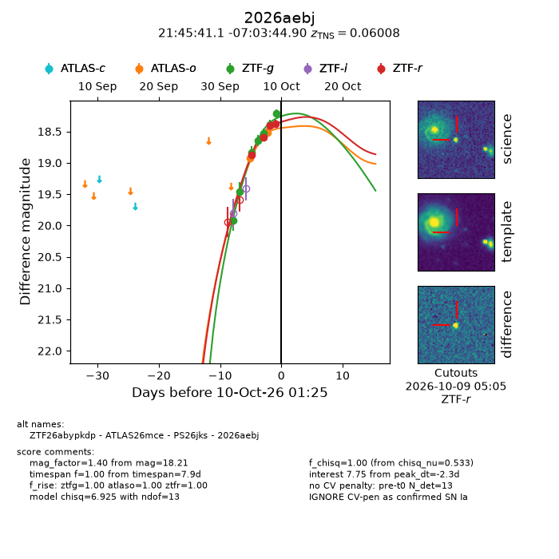
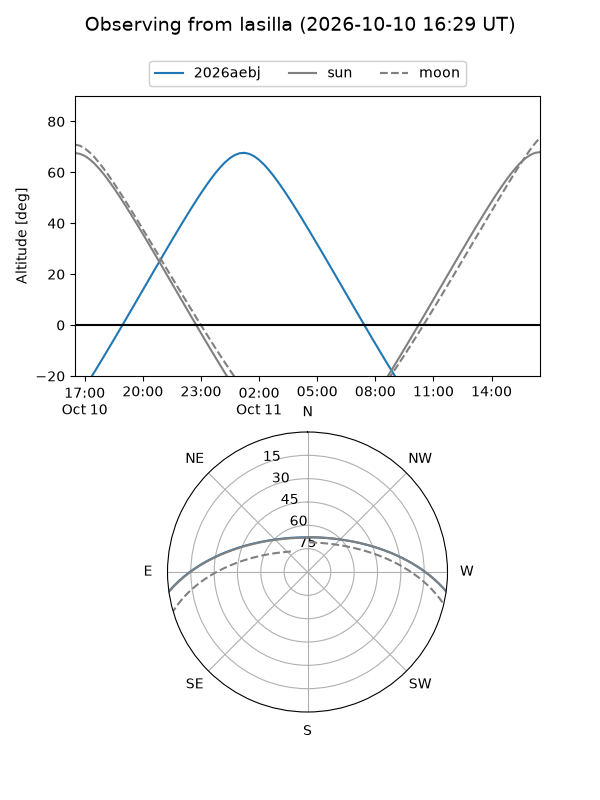
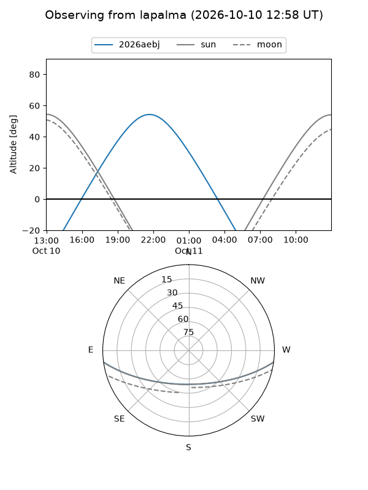
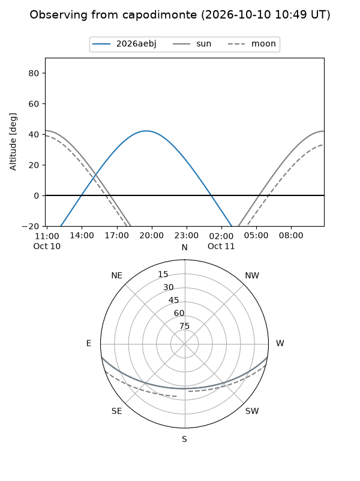
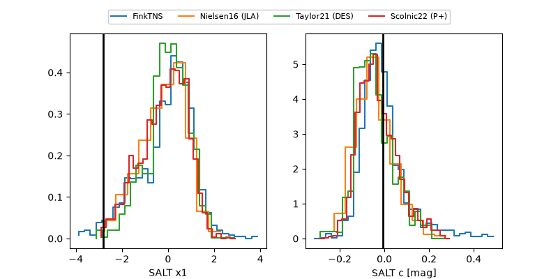

2026aebj
Target 2026aebj at 2026-10-10 13:26
Aliases and brokers:
FINK-ZTF: ztf.fink-portal.org/ZTF26abypkdp
Lasair-ZTF: lasair-ztf.lsst.ac.uk/objects/ZTF26abypkdp
ALeRCE-ZTF: alerce.online/object/ZTF26abypkdp
YSE-PZ: ziggy.ucolick.org/yse/transient_detail/2026aebj
TNS name: wis-tns.org/object/2026aebj
Direct TNS query: direct search
alt names
ZTF26abypkdp (ztf,fink_ztf)
2026aebj (tns,yse)
ATLAS26mce (atlas)
PS26jks (panstarrs)
Coordinates:
equatorial (ra, dec) = 326.4211,-7.06247
equatorial (HMS+DMS) = 21:45:41.06,-07:03:44.90
galactic (l, b) = (48.6529,-41.66172)
Flags:
TNS type: SN Ia
TNS redshift: 0.0601
peak dt: -1.8
Photometry:
last atlaso=18.52, ztfg=18.21, ztfr=18.38
2 atlaso, 7 ztfg, 4 ztfr detections
Lightcurve

Visibility



Additional plots
